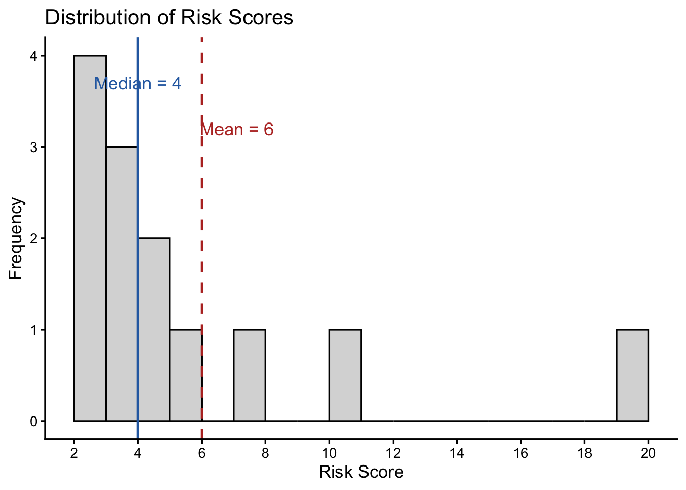

5 Describing the Typical Case
5.1 The Question
NoteCentral question
How can we select one value that meaningfully represents the center of a distribution?
Criminal justice data often contain many observations, but we frequently need to communicate the overall pattern with a small number of meaningful summaries. A measure of central tendency identifies a value that represents the center or typical case in a distribution.
There is no single definition of typical. The most common value, the middle value, and the arithmetic average can all describe a distribution’s center, but they answer different questions and require different kinds of data. Choosing among the mode, median, and mean is therefore an analytical decision rather than a mechanical one.
This chapter also extends the logic of the median to percentiles and shows how the shape of a distribution affects our choice of a measure of center.
5.2 What You Will Learn
After completing this chapter, you should be able to:
- Calculate and interpret the mode, median, and mean.
- Select an appropriate measure of central tendency based on the research question, level of measurement, and shape of the distribution.
- Distinguish the notation for a sample mean from the notation for a population mean.
- Use quartiles and percentiles to describe the relative position of observations.
- Distinguish symmetric, right-skewed, and left-skewed distributions.
- Explain how extreme values affect the mean and median differently.
5.3 Crime in Slumberg
The city of Slumberg is studying burglary patterns across neighborhoods. Officials want to answer three questions:
- What is the most common neighborhood for burglaries?
- What is the typical level of fear of crime?
- What is the average response time for burglary calls?
The police department examines a sample of 11 recent burglary cases.
| Case | Neighborhood | Response Time (minutes) | Value Stolen (hundreds of dollars) | Fear of Crime (1–5) |
|---|---|---|---|---|
| 1 | East | 4 | 8 | 4 |
| 2 | East | 5 | 2 | 3 |
| 3 | North | 6 | 3 | 3 |
| 4 | East | 7 | 4 | 4 |
| 5 | West | 6 | 12 | 5 |
| 6 | North | 5 | 3 | 2 |
| 7 | North | 8 | 3 | 4 |
| 8 | West | 10 | 15 | 5 |
| 9 | East | 4 | 1 | 3 |
| 10 | East | 5 | 4 | 3 |
| 11 | East | 6 | 4 | 3 |
Different measures of central tendency answer the three questions:
- The mode identifies what is most common.
- The median identifies the middle of an ordered distribution.
- The mean identifies the arithmetic balance point of quantitative values (i.e., the average).
5.4 The Mode: What Is Most Common?
The mode is the value or category that occurs most frequently. To identify the most common neighborhood, we count the cases in each category.
| Neighborhood | Frequency (\(f\)) |
|---|---|
| East | 6 |
| North | 3 |
| West | 2 |
| Total | 11 |
The modal neighborhood is East, where 6 of the 11 burglaries occurred.
The mode can be used with nominal, ordinal, interval, or ratio variables because it requires only a count of how often each value occurs. This flexibility across levels of measurement makes the mode a very useful measure.
ImportantA distribution may have more than one mode
If two values tie for the highest frequency, the distribution is bimodal. More generally, a distribution with several most-frequent values is multimodal. If every value occurs equally often, the distribution has no uniquely informative mode (called a uniform distribution because data are distributed uniformly across categories).
5.5 The Median: What Falls in the Middle?
The median is the middle value after observations have been arranged from lowest to highest. It separates the ordered observations so that approximately half fall at or below it and half fall at or above it.
Because finding a median requires meaningful ordering, it is appropriate for ordinal, interval, and ratio variables but not for nominal variables.
5.5.1 Step 1: Order the Values
The observed fear-of-crime values are:
\[ 4, 3, 3, 4, 5, 2, 4, 5, 3, 3, 3 \]
In ascending order, they are:
\[ 2, 3, 3, 3, 3, 3, 4, 4, 4, 5, 5 \]
5.5.2 Step 2: Locate the Middle
For an odd number of observations, the median position is:
\[ \text{Median position}=\frac{n+1}{2} \]
Here, \(n=11\), so:
\[ \frac{11+1}{2}=6 \]
The sixth ordered value is 3. Therefore, the median fear-of-crime response is 3.
If the scale defines 3 as Somewhat afraid, an appropriate interpretation is:
The median fear-of-crime response among the 11 cases was Somewhat afraid.
5.5.3 What If the Number of Observations Is Even?
When \(n\) is even, there are two middle positions. For a quantitative variable, the conventional median is the mean of those two values. For an ordinal variable, the middle categories should be interpreted carefully because averaging category codes may imply equal spacing that the scale does not guarantee. When both middle observations fall in the same category, as they often do, the median category is unambiguous.
TipThe median depends on position, not distance
The median is determined by the ordering of the observations. Extreme values do not pull it upward or downward in the way they can affect the mean.
5.6 The Mean: What Is the Arithmetic Average?
The mean is calculated by adding the observed values and dividing by the number of observations. It is appropriate for interval- or ratio-level variables when an arithmetic average has a meaningful interpretation.
Because the 11 burglary cases are treated as a sample, we use the sample mean:
\[ \bar{x}=\frac{\sum_{i=1}^{n}x_i}{n} \]
where:
- \(\bar{x}\) is the sample mean (pronounced “x bar”);
- \(x_i\) is the value for observation \(i\);
- \(\sum\) indicates that we add the values; and
- \(n\) is the number of observations in the sample.
For the response times:
\[ \bar{x}=\frac{4+5+6+7+6+5+8+10+4+5+6}{11} =\frac{66}{11} =6 \]
The mean response time among these 11 burglary cases was 6 minutes.
NoteSample and population notation
When values come from a sample, the mean is a statistic written as \(\bar{x}\), and the sample size is \(n\).
When values describe an entire population, the mean is a parameter written as \(\mu\), and the population size is \(N\):
\[ \mu=\frac{\sum_{i=1}^{N}X_i}{N} \]
The calculation follows the same logic, but the notation tells us whether we are describing a sample or an entire population. When we discuss sampling distributions this distinction will make more sense (but we want to start makign it now).
5.7 How Extreme Values Affect the Center
Consider the values of property stolen, measured in hundreds of dollars:
\[ 8, 2, 3, 4, 12, 3, 3, 15, 1, 4, 4 \]
The ordered values are:
\[ 1, 2, 3, 3, 3, 4, 4, 4, 8, 12, 15 \]
The median is 4, representing $400. The sample mean is:
\[ \bar{x}=\frac{59}{11}\approx5.36 \]
Because the values are recorded in hundreds of dollars, the mean is approximately $536.
Why are the median and mean different? The relatively large values of $1,200 and $1,500 pull the mean above the median.
This does not make the mean incorrect. It just tells us that the mean incorporates the magnitude of every observation, while the median depends primarily on their ordered positions. When a distribution is skewed or contains extreme values, reporting both may provide a more complete description.
5.8 Choosing an Appropriate Measure
| Level of measurement | Mode | Median | Mean |
|---|---|---|---|
| Nominal | Yes | No | No |
| Ordinal | Yes | Yes | Generally no |
| Interval | Yes | Yes | Yes |
| Ratio | Yes | Yes | Yes |
The level of measurement establishes what is mathematically meaningful, but the research question and distribution also matter.
- Use the mode when the question asks what is most common.
- Use the median when the question asks for the middle ordered observation or when extreme values make the mean less representative.
- Use the mean when the question asks for an arithmetic average and the distances between values are meaningful.
WarningDo not choose a measure from the wording alone
Words such as typical and average can be ambiguous. First identify what the question is trying to communicate, then consider the variable’s level of measurement and the shape of its distribution.
5.9 Check Your Understanding: Crime on Campus
You have taken a work-study position as an analyst for Slumberg University. Campus safety officials collected data on 10 incidents reported during the past semester.
| Case | Type of Crime | Residence Hall | Fear of Crime (1–5) | Response Time (minutes) | Number of Witnesses |
|---|---|---|---|---|---|
| 1 | Theft | Oak | 3 | 6 | 7 |
| 2 | Assault | Pine | 4 | 8 | 10 |
| 3 | Theft | Oak | 2 | 5 | 5 |
| 4 | Vandalism | Birch | 3 | 6 | 8 |
| 5 | Theft | Oak | 4 | 7 | 6 |
| 6 | Assault | Maple | 3 | 5 | 9 |
| 7 | Theft | Oak | 2 | 4 | 7 |
| 8 | Vandalism | Pine | 3 | 8 | 8 |
| 9 | Theft | Oak | 4 | 6 | 6 |
| 10 | Assault | Maple | 3 | 7 | 9 |
For each question, identify the appropriate measure of central tendency, calculate it, and interpret the result.
- What is the most common type of crime reported on campus?
- What is the median level of fear of crime among the people involved in these cases?
- What is the mean police response time for the incidents?
- At which residence hall did the largest number of reports occur?
- What is the mean number of witnesses per incident?
NoteCheck your answers
| Question | Appropriate measure | Result | Interpretation |
|---|---|---|---|
| Most common type of crime | Mode | Theft | Theft was the most frequently reported crime, appearing in 5 of the 10 incidents. |
| Middle fear-of-crime response | Median | 3 | The median fear-of-crime response was 3. |
| Average response time | Mean | 6.2 minutes | The mean response time among the 10 incidents was 6.2 minutes. |
| Residence hall with the most reports | Mode | Oak | Oak was the modal residence hall, appearing in 5 reports. |
| Average number of witnesses | Mean | 7.5 witnesses | The mean number of witnesses among the 10 incidents was 7.5. This average need not be a possible count for an individual incident. |
5.10 Percentiles: Describing Relative Position
The median identifies the center of an ordered distribution. Percentiles extend that idea by identifying positions throughout the distribution. The \(k\)th percentile is a value at or below which approximately \(k\) percent of the observations fall.
Three percentiles are used especially often:
- The first quartile, \(Q_1\), is the 25th percentile.
- The second quartile, \(Q_2\), is the 50th percentile, or median.
- The third quartile, \(Q_3\), is the 75th percentile.
Together, the quartiles divide the ordered observations into four portions. They help us determine whether a case is relatively low, near the middle, or relatively high compared with other cases in the dataset.
ImportantPercentile calculation methods vary
Several accepted rules exist for calculating percentiles, especially in small datasets. Statistical software packages may therefore return slightly different values. This book uses the median-of-halves method for quartiles: find the overall median, then find the median of the lower and upper halves.
5.10.1 Example: Correctional Risk Scores
A state department of corrections uses a risk-assessment score ranging from 1, representing very low assessed risk, to 20, representing very high assessed risk. An administrator wants to identify the highest-scoring quarter of 12 cases so that staff can plan reentry services for these individuals.
The ordered risk scores are:
\[ 4, 5, 5, 6, 6, 7, 7, 8, 8, 9, 10, 12 \]
5.10.2 Finding the Median
Because \(n=12\), the median is the mean of the sixth and seventh values:
\[ Q_2=\frac{7+7}{2}=7 \] Since risk scores are an ratio level measure, we can use this method for finding the median. If the risk scores were measured at the ordinal or nominal level, this would make less sense to do.
5.10.3 Finding the First Quartile
The lower half contains the first six values:
\[ 4, 5, 5, 6, 6, 7 \]
The middle of this half lies between 5 and 6:
\[ Q_1=\frac{5+6}{2}=5.5 \]
5.10.4 Finding the Third Quartile
The upper half contains the final six values:
\[ 7, 8, 8, 9, 10, 12 \]
The middle of this half lies between 8 and 9:
\[ Q_3=\frac{8+9}{2}=8.5 \]
The scores in the highest quarter are 9, 10, and 12. In these data, they fall above \(Q_3=8.5\).
WarningA percentile cutoff does not always produce an exact percentage of cases
Tied scores can place several cases at the same cutoff. As a result, a rule such as “select everyone at or above the 75th percentile” may include more than 25% of the cases. Analysts should report the selection rule and consider the consequences of cases tied at the boundary.
5.11 Symmetry and Skewness
The shape of a distribution describes how its values are arranged. Shape helps us understand why the mean and median may provide different descriptions of the center.
5.11.1 Symmetric Distributions
A symmetric distribution has roughly the same shape on both sides of its center. In a perfectly symmetric distribution, the mean and median coincide. In observed data that are approximately symmetric, they are generally close.
5.11.2 Right-Skewed Distributions
A right-skewed, or positively skewed, distribution has a longer tail toward the higher values. A small number of high observations pull the mean toward the right tail, so the mean is typically greater than the median.
Examples can include the value of property stolen, sentence lengths, or the number of offenses committed when a small number of cases have especially high values.
5.11.3 Left-Skewed Distributions
A left-skewed, or negatively skewed, distribution has a longer tail toward the lower values. A small number of low observations pull the mean toward the left tail, so the mean is typically less than the median.
5.11.4 Example: A Right-Skewed Distribution
Consider these 13 ordered risk scores:
\[ 2, 3, 3, 3, 4, 4, 4, 5, 5, 6, 8, 11, 20 \]
The median is the seventh value:
\[ \text{Median}=4 \]
The sample mean is:
\[ \bar{x}=\frac{2+3+3+3+4+4+4+5+5+6+8+11+20}{13} =\frac{78}{13} =6 \]
The mean is greater than the median because the score of 20 extends the upper tail and pulls the mean above the median. The distribution is right-skewed.
TipThe mean is pulled toward the tail
In a right-skewed distribution, the mean is usually above the median. In a left-skewed distribution, the mean is usually below the median. This is a useful diagnostic, but the graph and the underlying observations should also be examined.
5.12 Selecting a Measure for a Distribution
| Situation | Often-useful measure | Reason |
|---|---|---|
| Nominal variable | Mode | Categories can be counted but not meaningfully ordered. |
| Ordinal variable | Median or mode | Order is meaningful, but equal distances cannot be assumed. |
| Approximately symmetric quantitative distribution | Mean, often with the median | The mean uses every value and is not being strongly pulled by a tail. |
| Skewed quantitative distribution | Median, often with the mean | The median is resistant to extreme observations. Reporting both reveals the asymmetry. |
| Question concerns the most common value | Mode | The mode directly identifies the most frequent value. |
| Question concerns relative standing | Percentile or quartile | Position in the ordered distribution is the focus. |
No rule eliminates the need for judgment. An analyst should consider the question, level of measurement, shape of the distribution, and audience. Sometimes the most honest description reports more than one measure.
5.13 Test Your Knowledge: Days to Sentencing
5.13.1 The Scenario
The Waitenlonng County Court is reviewing how long cases take to move from conviction to sentencing. Officials want to describe the waiting time and understand the shape of its distribution.
The court provides data from a sample of 15 recent cases. The values are already ordered from shortest to longest wait.
| Case | Months to Sentencing |
|---|---|
| 1 | 1 |
| 2 | 7 |
| 3 | 9 |
| 4 | 10 |
| 5 | 12 |
| 6 | 14 |
| 7 | 15 |
| 8 | 15 |
| 9 | 16 |
| 10 | 17 |
| 11 | 17 |
| 12 | 18 |
| 13 | 18 |
| 14 | 19 |
| 15 | 22 |
5.13.2 Part 1: Calculate
Using the median-of-halves method for the quartiles:
- Calculate the median time to sentencing.
- Calculate \(Q_1\), the 25th percentile.
- Calculate \(Q_3\), the 75th percentile.
- Calculate the sample mean.
5.13.3 Part 2: Interpret
- Interpret the median in the context of the cases.
- Interpret \(Q_1\) and \(Q_3\) without claiming that the quartile cutoffs split tied observations perfectly.
- Compare the mean and median. Is the distribution symmetric, right-skewed, or left-skewed?
- Which measure would you use to describe the typical waiting time? Explain your choice.
5.13.4 Part 3: Evaluate
- A court administrator says, “A defendant in this county should expect to be sentenced within 14 months.” Is that conclusion supported by these data? Explain what is wrong or incomplete about it.
- What additional information would you need before generalizing from these 15 cases to all cases in the county?
NoteReview the answers
Using the median-of-halves method:
- The median is the eighth observation, so \(Q_2=15\) months.
- Excluding the overall median, the lower half is \(1, 7, 9, 10, 12, 14, 15\). Its middle value is 10, so \(Q_1=10\) months.
- The upper half is \(16, 17, 17, 18, 18, 19, 22\). Its middle value is 18, so \(Q_3=18\) months.
- The values sum to 210, so \(\bar{x}=210/15=14\) months.
- The median indicates that the middle observed waiting time was 15 months. Approximately half of the cases had shorter waits and half had longer waits, with the tied value of 15 at the center.
- About one-quarter of the observed cases had waits at or below 10 months, and about three-quarters had waits at or below 18 months. Equivalently, the middle half of the observations fell approximately between 10 and 18 months.
- The mean of 14 months is below the median of 15 months because the unusually short one-month wait pulls the mean toward the lower tail. The distribution is left-skewed.
- The median of 15 months is a useful description of a typical wait because it is resistant to the unusually short observation. Reporting the mean as well would reveal the effect of the skew.
- The claim is not supported as written. The mean of these 15 cases is 14 months, but many observed cases took longer, and the sample may not represent every county case. The wording should expect also suggests a prediction about a new case that a descriptive sample mean alone cannot provide.
- We would need to know how the 15 cases were selected, what time period they represent, whether important kinds of cases were excluded, and how similar they are to the full population of county cases.
5.14 Project Connection: Describe the Center and Shape
Select one variable from your semester investigation for which a measure of central tendency is meaningful.
- State the variable’s level of measurement.
- Calculate every appropriate measure among the mode, median, and mean.
- If the variable is ordered, calculate \(Q_1\) and \(Q_3\) using a stated method.
- Examine the distribution for skewness or extreme values.
- Select the measure that best answers your question and justify the choice.
- Write two or three sentences interpreting the result without generalizing beyond the available data.
5.15 Chapter Summary
- The mode identifies the most frequent value, the median identifies the middle ordered value, and the mean identifies the arithmetic balance point.
- The appropriate measure depends on the research question, level of measurement, and shape of the distribution.
- The sample mean is written as \(\bar{x}\) and uses \(n\); the population mean is written as \(\mu\) and uses \(N\).
- Percentiles describe relative position. \(Q_1\), the median, and \(Q_3\) mark the 25th, 50th, and 75th percentiles.
- Accepted percentile algorithms can produce slightly different cutoffs, and ties can prevent a cutoff from dividing cases into exact percentages.
- The mean is sensitive to extreme values, while the median is resistant to them.
- The mean is typically greater than the median in a right-skewed distribution and less than the median in a left-skewed distribution.
5.16 Key Terms
- Bimodal: Having two values tied for the highest frequency.
- Central tendency: The center or typical value of a distribution.
- First quartile (\(Q_1\)): The 25th percentile.
- Left-skewed distribution: A distribution with a longer tail toward lower values.
- Mean: The arithmetic average of a set of quantitative values.
- Median: The middle value of an ordered distribution.
- Mode: The most frequently occurring value or category.
- Multimodal: Having more than two values tied for the highest frequency.
- Percentile: A value at or below which approximately a specified percentage of observations fall.
- Quartiles: Values that divide ordered observations into four portions.
- Resistant measure: A statistic that is not strongly affected by extreme observations.
- Right-skewed distribution: A distribution with a longer tail toward higher values.
- Symmetric distribution: A distribution with roughly the same shape on both sides of its center.
- Third quartile (\(Q_3\)): The 75th percentile.